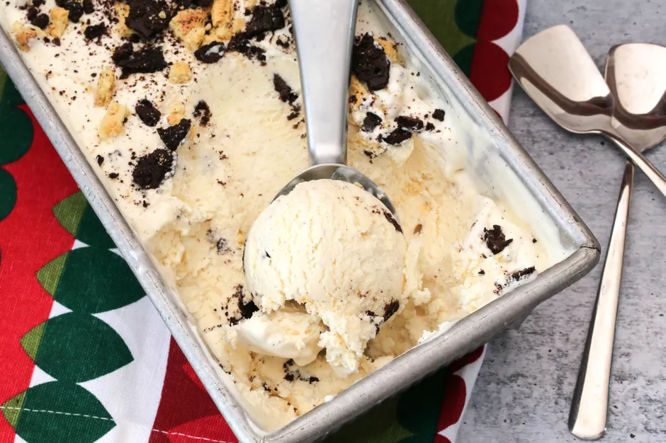

No-Churn Ice Cream

Description
If you've wanted to try making ice cream but don't have an ice cream maker, this no-churn ice cream recipe is a great place to start. This basic recipe calls for just four ingredients and an electric mixer, whisk, spatula, and a few bowls. It's a creamy, delightful ice cream that can be embellished with any swirl-ins you might like.
There is also no cooking required, so it takes just a few minutes to put together. You can keep the ice cream plain vanilla or add chunks of chocolate, cookie crumbs, or chopped toasted nuts. The flavor possibilities are endless with this recipe, so feel free to use your imagination.
Ingredients
- 1 (14-ounce) can sweetened condensed milk
- 1 1/2 teaspoons vanilla extract (or vanilla bean paste)
- Pinch of salt
- 2 cups heavy cream, chilled
- Chunks of chocolate, cookie crumbs, chopped toasted nuts, optional
Steps
- Gather the ingredients. Place a 9 x 5-inch loaf pan in the freezer.
- In a medium bowl, combine the sweetened condensed milk with the vanilla extract and salt. Whisk or stir the mixture until thoroughly blended.
- In a mixing bowl with an electric mixer, beat the chilled heavy cream until it forms stiff peaks.
- Add about 1 cup of the whipped cream to the sweetened condensed milk mixture and stir gently until well blended.
- Pour the condensed milk mixture into the remaining whipped cream and fold with a spatula or spoon until no streaks remain.
- Pour the ice cream mixture into the chilled loaf pan and spread it evenly. Return the pan to the freezer.
- If adding any ingredients to the ice cream, incorporate after 2 hours. Swirl to distribute the add-ins and return the pan to the freezer. Freeze for about 3 hours longer, or until very firm.
- Remove the ice cream from the freezer and let it stand for about 10 minutes to soften slightly.
- Scoop the ice cream into dessert dishes and garnish with your favorite sauces and ice cream toppings, such as chucks of chocolate, cookie crumbs, and chopped toasted nuts. Enjoy.